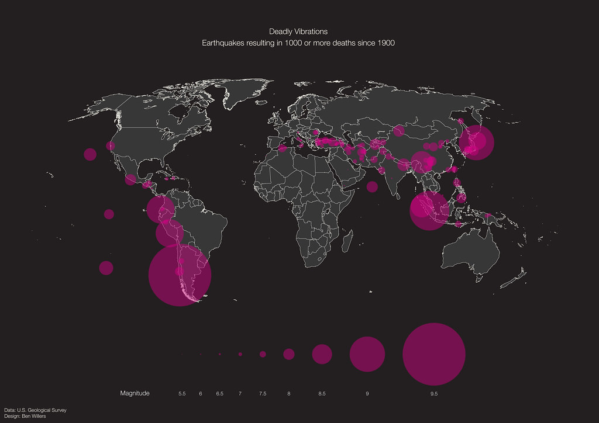
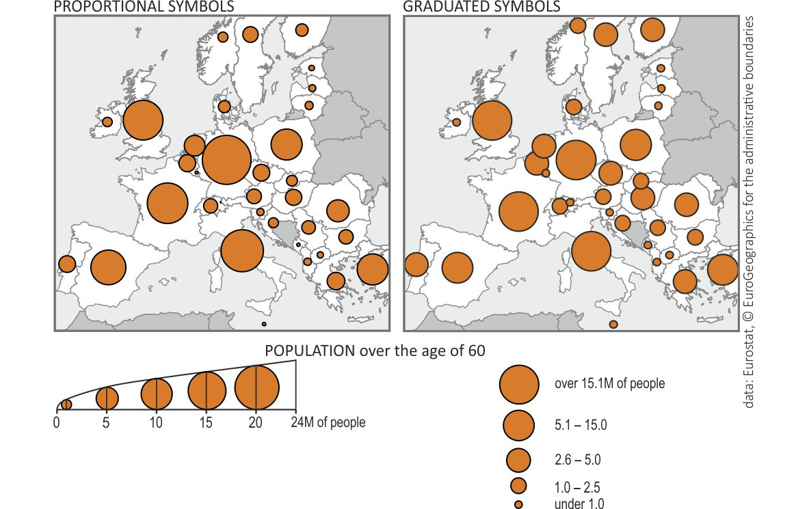

Визуализация пространственных данных
Геоинформационные системы. Лекция 5


Внимание
Использование таких палитр обосновано тогда, когда данные подразумевают, что середина и значение ей соответствующее имеет определенный смысл.
Радужная палитра
В настоящее время рекомендуется избегать так называемой радужной палитры, потому что сама по себе она искажает изображение объектов.
Это связано с тем, что в ней содержатся различные по яркости и цвету фрагменты, которые не позволяют однозначно последовательно выстроить цвета2.


Предупреждение
Использование кругов влечет за собой определенные сложности для их масштабирования, так как площадь круга при увеличении изменяется нелинейно.
Джеймс Флэннери в своей диссертации оценил, насколько люди способны сравнивать между собой площади круга, что послужило основой для метода масштабирования символов, названного его именем.

1838 map of railroad traffic in Ireland, one of the first thematic maps to use proportional symbols.

An 1858 proportional symbol map by Charles Joseph Minard, with a circle for each department sized according to the amount of meat shipped to Paris for consumption, including pie charts distinguishing the types of meat.



Источник: https://studio.unfolded.ai/public/b56a3794-fe0f-47fe-94d3-44e4ca59dd80
Дополнительно
Карты пропорциональных символов позволяют комбинировать несколько визуальных переменных. Например, вы можете отобразить один показатель размером, а другой цветом или формой.


Карта плотности точек
Подход отображения величины показателя с помощью скопления точек равномерно и случайным образом в пределах административного района.

Самым знаменитым примером карты плотности точек является карта Джона Сноу, которая положила начало пространственному анализу, тематическому картографированию, ГИС, кластеризации и современной эпидемиологии, но на самом деле история не совсем такая, как ее обычно рассказывают3.


Deaths from cholera in Soho, London 1854 by Edmund Cooper.


Сноски
Nuñez JR, Anderton CR, Renslow RS (2018) Optimizing colormaps with consideration for color vision deficiency to enable accurate interpretation of scientific data. PLoS ONE 13(7): e0199239. https://doi.org/10.1371/journal.pone.0199239.)
How rainbow colour maps can distort data and be misleading https://theconversation.com/how-rainbow-colour-maps-can-distort-data-and-be-misleading-167159